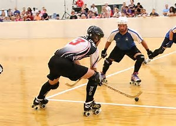

Hockey

Roller hockey is a form of hockey played on a dry surface using wheeled skates.Most professional-inline hockey games take place on an indoor or outdoor sport court (a type of plastic interlinking tiles used to create a skating surface). Otherwise, any dry surface can be used to host a game, typically a roller rink, macadam, or cement. The term "Roller Hockey" is often used interchangeably to refer to two variant forms chiefly differentiated by the type of skates and sticks used. There is traditional "Roller hockey" (Quad hockey, Rink hockey), played with quad skates, and "Inline hockey", played with inline skates. Combined, roller hockey is played in nearly 60 countries worldwide. A minor variant of roller hockey is called skater hockey, played on both quad and inline skates.
Roller hockey, also known as quad hockey, international-style ball hockey, and Hoquei em Patins, is an overarching name for a roller sport that has existed since long before inline skates were invented. This sport is played in over sixty countries and has a worldwide following. Roller hockey was a demonstration sport at the 1992 Barcelona Summer Olympics.